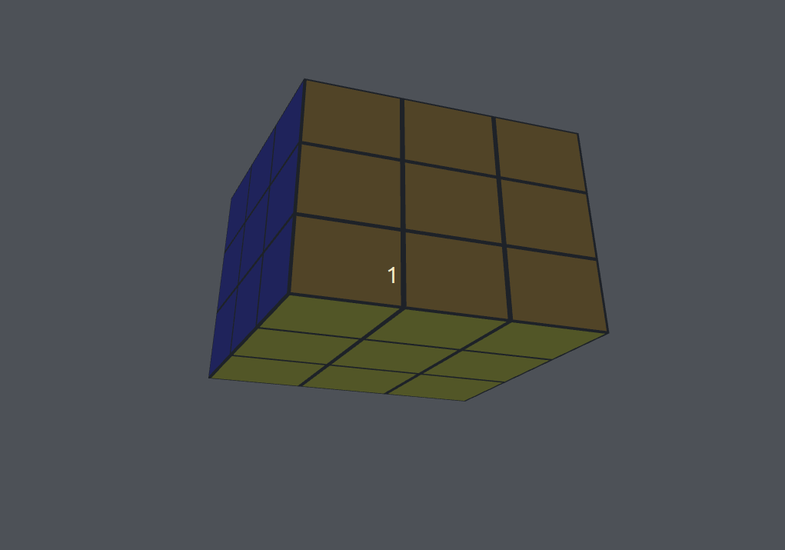

Rubik's Cube Simulator
Technologies
- This application was written using C++ and the OpenGL graphics library.
- After learning how to use OpenGL with this tutorial series, I set about creating my own application. I decided upon creating a Rubik's cube simulator as it would allow me to overcome several challenges:
- Carrying out camera transformations in response to user input
- Performing 3D rotations of specific smaller cubes.
- Managing the state of the cube under composite transformations